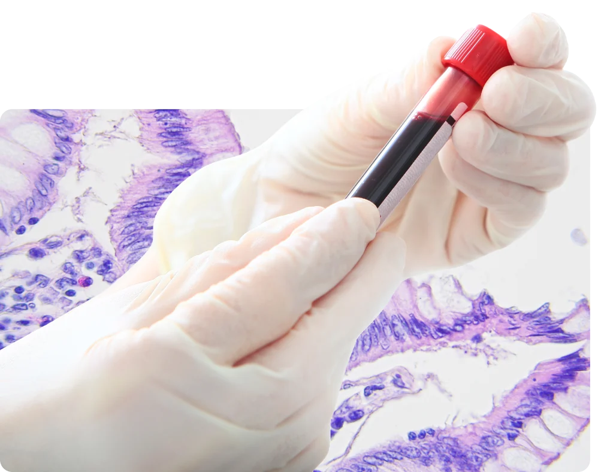
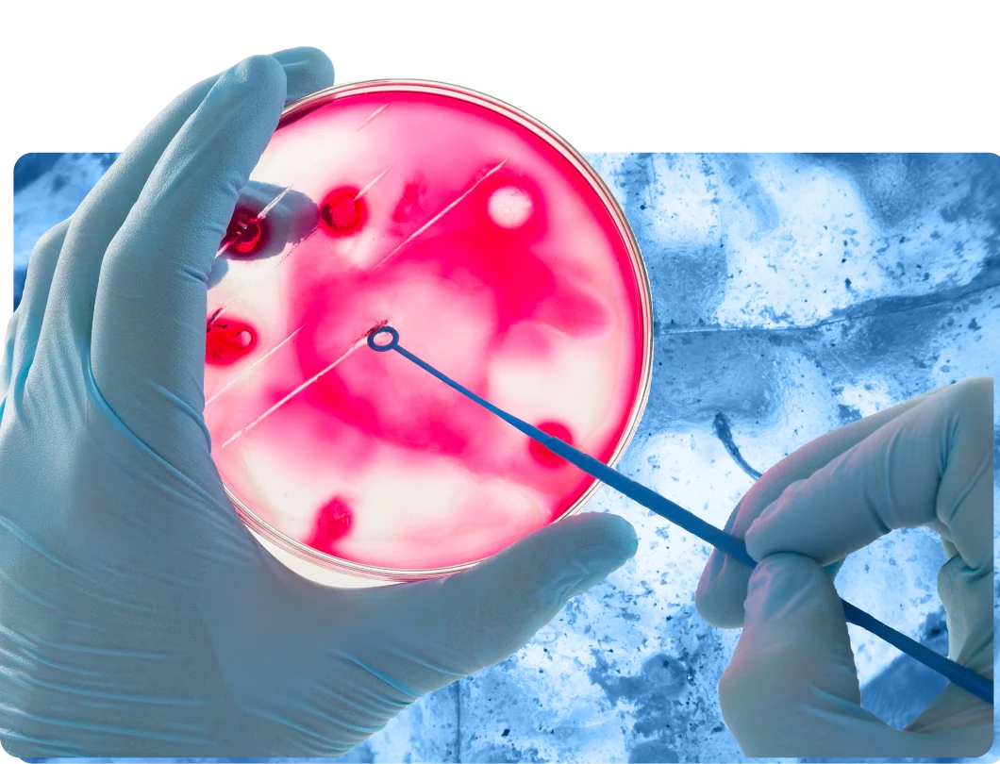
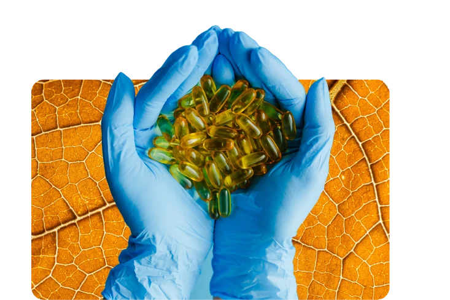
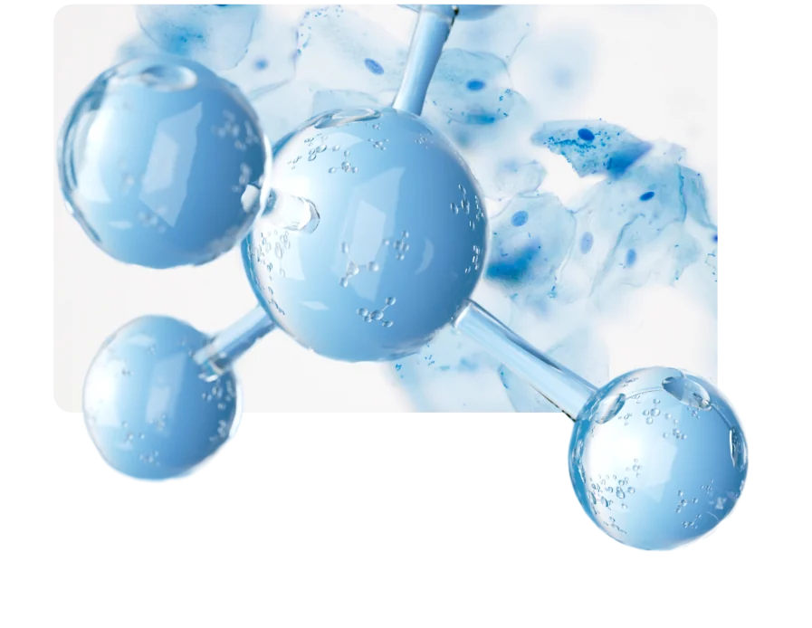
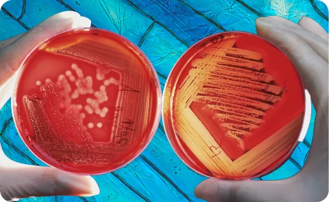

BIA
For the BioIndustry Association, an impactful and meaningful campaign to raise awareness about the digital and data-focused career opportunities in the biotech and life science industry.
Rhapsody Utilisation:




